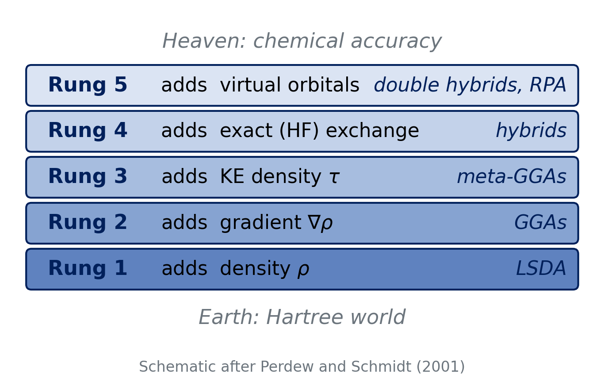
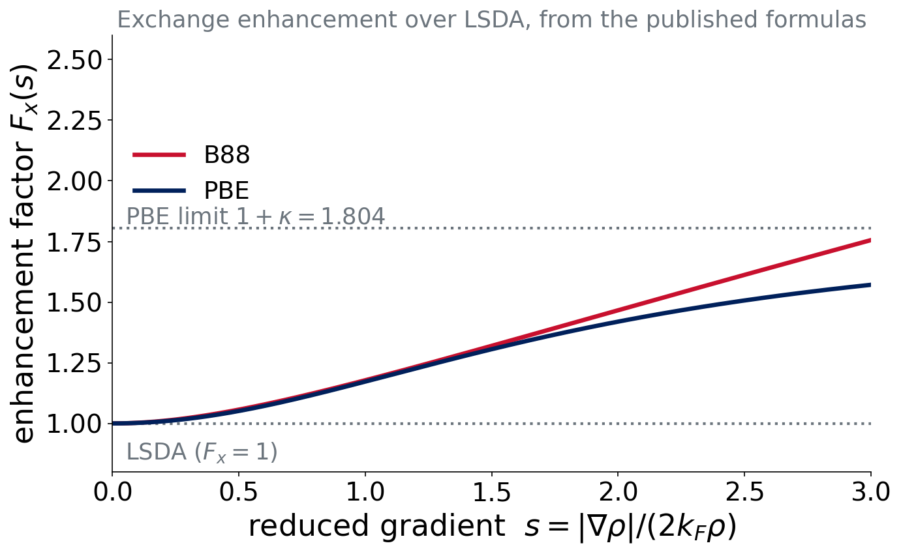
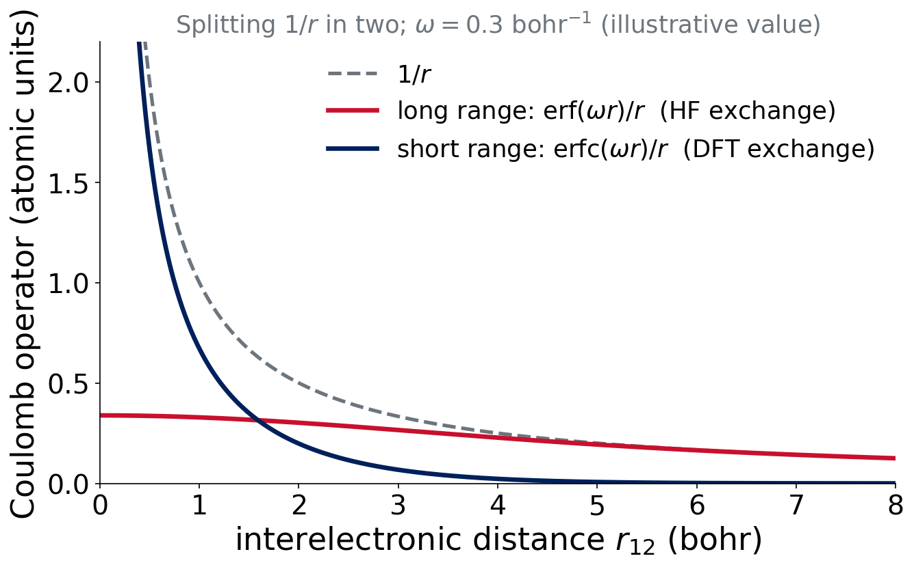

Lecture 6 · Approximating the Hamiltonian III
Jacob’s ladder and Experiment 2
Advanced Physical Chemistry · Florida Institute of Technology
The ladder
Jacob’s ladder

Perdew & Schmidt, AIP Conf. Proc. 577, 1 (2001)
The idea
Each rung adds a new ingredient to \(E_{xc}\) and, hopefully, climbs towards chemical accuracy (about 1 kcal/mol).
- More ingredients: usually more accuracy
- Also: more cost, and more ways to go wrong
- A climb in principle, not a guarantee in practice
Rungs 2 and 3
Rung 2: GGA
Add the gradient of the density, through the reduced gradient
\[ s=\frac{|\nabla\rho|}{2k_F\rho},\qquad k_F=(3\pi^2\rho)^{1/3} \]
\[ E_x^\text{GGA}=\int \rho^{4/3}\,F_x(s)\,d\mathbf r\cdot(\text{constants}) \]
\(F_x(s)\): the enhancement factor over LSDA.
Two exchange enhancement factors

Plotted from the published formulas. B88: empirical, one parameter fitted to atoms. PBE: derived from constraints, bounded.
GGA names are recipes
Exchange + correlation:
| Name | Exchange | Correlation |
|---|---|---|
| BLYP | B88 | LYP |
| BP86 | B88 | P86 |
| PBE | PBE | PBE |
Becke, Phys. Rev. A 38, 3098 (1988); Lee, Yang & Parr, Phys. Rev. B 37, 785 (1988); Perdew, Burke & Ernzerhof, Phys. Rev. Lett. 77, 3865 (1996)
Rung 3: meta-GGA
Add the kinetic-energy density
\[ \tau(\mathbf r)=\tfrac12\sum_i|\nabla\phi_i(\mathbf r)|^2 \]
(and/or the Laplacian \(\nabla^2\rho\)). Still no HF exchange.
Examples: TPSS (2003), SCAN (2015; non-empirical, built to satisfy 17 exact constraints).
Tao, Perdew, Staroverov & Scuseria, Phys. Rev. Lett. 91, 146401 (2003); Sun, Ruzsinszky & Perdew, Phys. Rev. Lett. 115, 036402 (2015)
Think–pair–share
Question (2 min)
A functional uses ρ, ∇ρ and τ, and has no HF exchange. Which rung? What could you add to climb one more rung?
Rung 3 (meta-GGA). Add a fraction of exact (HF) exchange: rung 4.
Rung 4: hybrids
Global hybrids
Replace part of the DFT exchange with exact HF exchange:
\[ E_{xc}=E_{xc}^\text{DFT}+a_0\big(E_x^\text{HF}-E_x^\text{DFT}\big) \]
Motivation: the adiabatic connection links the non-interacting and the real system, and the exact exchange belongs to the non-interacting end (Becke 1993).
B3LYP and PBE0
- B3LYP: 20% HF exchange. Three fitted parameters in total (Becke 1993; Stephens et al. 1994)
- PBE0: 25% HF exchange, no fitted mixing (Adamo & Barone 1999)
Hybrid meta-GGAs add τ as well:
- M06-2X: 54% HF exchange; the “2X” means “double the exchange” of M06
Becke, J. Chem. Phys. 98, 5648 (1993); Stephens et al., J. Phys. Chem. 98, 11623 (1994); Adamo & Barone, J. Chem. Phys. 110, 6158 (1999)
Why HF exchange helps
- HF has no self-interaction
- Pure functionals have some: electrons are too delocalized
- Mixing HF exchange reduces this error
Price: HF exchange is a non-local operator, so hybrids cost more than (meta-)GGAs.
Range-separated hybrids
Split the Coulomb operator:
\[ \frac{1}{r_{12}}=\underbrace{\frac{\mathrm{erfc}(\omega r_{12})}{r_{12}}}_\text{short range}+\underbrace{\frac{\mathrm{erf}(\omega r_{12})}{r_{12}}}_\text{long range} \]
DFT exchange at short range; HF exchange at long range (up to 100%).
The split in a picture

Range-separated examples
- ωB97X-V and ωB97M-V (Mardirossian & Head-Gordon, 2014 and 2016)
- M11 (Peverati & Truhlar, 2011): 42.8% HF at short range rising to 100% at long range
Rung 4 in one sentence: mix in exact exchange: a fixed fraction (global) or a fraction that depends on distance (range-separated).
Think–pair–share
Question (2 min)
If 20% HF exchange is good, is 100% better? Why or why not?
No. Pure HF exchange has no matching correlation and is not self-consistent with approximate DFT correlation. The best fraction depends on the functional’s other ingredients. High fractions (such as 54%) help some properties (barriers) and hurt others.
Rung 5 and two design questions
Rung 5: double hybrids
Add a term that looks like MP2 correlation, from virtual orbitals.
- Example: B2PLYP (Grimme 2006)
- Also: random-phase approximation (RPA)
- More accurate, more expensive (\(N^5\))
Not part of the course’s methods.
Design question 1: dispersion
How do we get the missing long-range dispersion?
| Strategy | Example |
|---|---|
| none | PBE |
| empirical -D4 (pairwise, charge-dependent \(C_6\)) | PBE-D4, B3LYP-D4 |
| nonlocal VV10 kernel (“-V”, “-rV”) | ωB97M-V, B97M-rV |
| built into a fitted functional | Minnesota functionals |
D4 is our standard. D2 and D3 are history.
Caldeweyher et al., J. Chem. Phys. 147, 034112 (2017); 150, 154122 (2019); Vydrov & Van Voorhis, J. Chem. Phys. 133, 244103 (2010)
Design question 2: how are functionals built?
Non-empirical
Satisfy exact constraints (PBE, SCAN). Few or no fitted parameters.
Empirical
Parameters fitted to data: B3LYP (3), Minnesota functionals, ωB97M-V (combinatorial optimization, many parameters).
Risk: overfitting to the training set (Lecture 9).
Decoding names
| Name | Reads as |
|---|---|
| B3LYP-D4 | Becke 3-parameter hybrid + LYP, plus D4 dispersion |
| ωB97M-V | ω = range-separated; B97-type; M = meta; V = VV10 nonlocal correlation |
| M06-2X | Minnesota 2006; 2X = twice the HF exchange of M06 |
| B97M-rV | B97-type meta-GGA with revised VV10 |
Think–pair–share
Question (2 min)
Without looking anything up: what does “PBE-D4” tell you about the ingredients? And what does “ωB97M-V” tell you about the cost relative to PBE?
PBE-D4: the PBE GGA plus an added pairwise dispersion correction. ωB97M-V: meta-GGA ingredient, HF exchange with range separation and a nonlocal kernel, so noticeably more expensive per SCF cycle.
A name is a recipe: read the ingredients (ρ, ∇ρ, τ, HF exchange, range separation) and the dispersion treatment.
Experiment 2
Experiment 2: the task
No calculations. You will:
- Classify 20 functionals by rung
- Learn how to find answers in the literature
Five categories (the same rungs, with hybrids kept apart):
| LSDA | GGA | meta-GGA | hybrid GGA | hybrid meta-GGA |
|---|
How to decide
Ask three questions about each functional:
- Does it use ρ only, ∇ρ, or also τ?
- Does it include HF exchange? (any fraction, global or at long range only)
- Which extra flags: range-separated? dispersion (-D, -V)?
Dispersion terms do not change the rung.
Where to look
- The original paper of each functional
- Reviews: Mardirossian & Head-Gordon, Mol. Phys. 115, 2315 (2017); Goerigk et al., Phys. Chem. Chem. Phys. 19, 32184 (2017)
- The Q-Chem manual
- Lecture notes from today
The page checks your answers and explains each one.
Lock predictions for next week
Experiment 3 starts next week: four “easy” organic reactions with 16 methods.
- Write down which rungs you expect to do best
- The website locks your predictions before you see results
Lecture 7: debrief of Experiments 1 and 2, and how to test a functional.
Summary of Lectures 4–6
Every method approximates Ĥ: HF is exchange without correlation, DFT puts everything into \(E_{xc}\), and Jacob’s ladder says which ingredients an \(E_{xc}\) uses.
- Ladder: LSDA → GGA → meta-GGA → hybrid → double hybrid
- Independent choices: dispersion, empirical or non-empirical, range separation
References
- Perdew & Schmidt, AIP Conf. Proc. 577, 1 (2001)
- Becke, Phys. Rev. A 38, 3098 (1988); J. Chem. Phys. 98, 5648 (1993)
- Lee, Yang & Parr, Phys. Rev. B 37, 785 (1988)
- Perdew, Burke & Ernzerhof, Phys. Rev. Lett. 77, 3865 (1996)
- Sun, Ruzsinszky & Perdew, Phys. Rev. Lett. 115, 036402 (2015)
- Adamo & Barone, J. Chem. Phys. 110, 6158 (1999)
- Mardirossian & Head-Gordon, J. Chem. Phys. 144, 214110 (2016); Mol. Phys. 115, 2315 (2017)
- Peverati & Truhlar, J. Phys. Chem. Lett. 2, 2810 (2011)
- Caldeweyher et al., J. Chem. Phys. 147, 034112 (2017); 150, 154122 (2019)
- Vydrov & Van Voorhis, J. Chem. Phys. 133, 244103 (2010)
- Goerigk et al., Phys. Chem. Chem. Phys. 19, 32184 (2017)

CHM 5111 · Advanced Physical Chemistry · Florida Institute of Technology